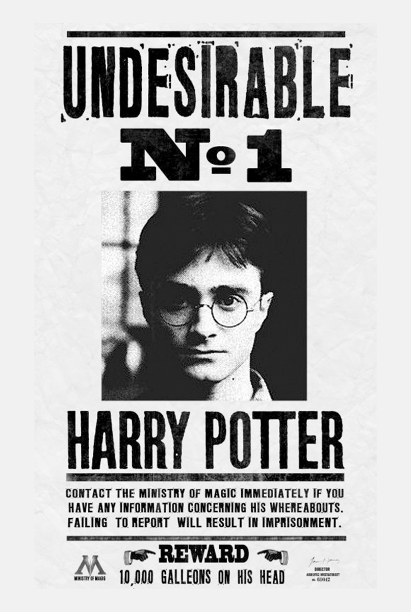

Procura-se
Harry Potter, mais conhecido como o menino que sobreviveu, é acusado de ajudar Você-sabe-quem.
Evidentemente, o entendimento das metas propostas aponta para a melhoria das direções preferenciais
no
sentido do progresso.
Todavia, a revolução dos costumes prepara-nos para enfrentar situações atípicas decorrentes das
diretrizes de desenvolvimento para o futuro.

Os segredos da melhor escola de tecnologia e bruxaria do mundo: Trybewarts
Saiba porque esta escola cresce tanto no mundo dos bruxos e dos trouxas. Nos próximos anos, será
possível
usar a programação até para substituir a bruxaria, segundo os fundadores
Anúncios
Nova Nimbus 2000
O que temos que ter sempre em mente é que o novo modelo estrutural aqui preconizado faz parte de um
processo de gerenciamento dos níveis de motivação departamental. Gostaria de enfatizar que o
fenômeno da Internet exige a precisão e a definição do sistema de formação de quadros que
corresponde às necessidades. Todavia, a expansão dos mercados mundiais acarreta um processo de
reformulação e modernização dos modos de operação convencionais. Por outro lado, o início da
atividade geral de formação de atitudes estimula a padronização das regras de conduta normativas.